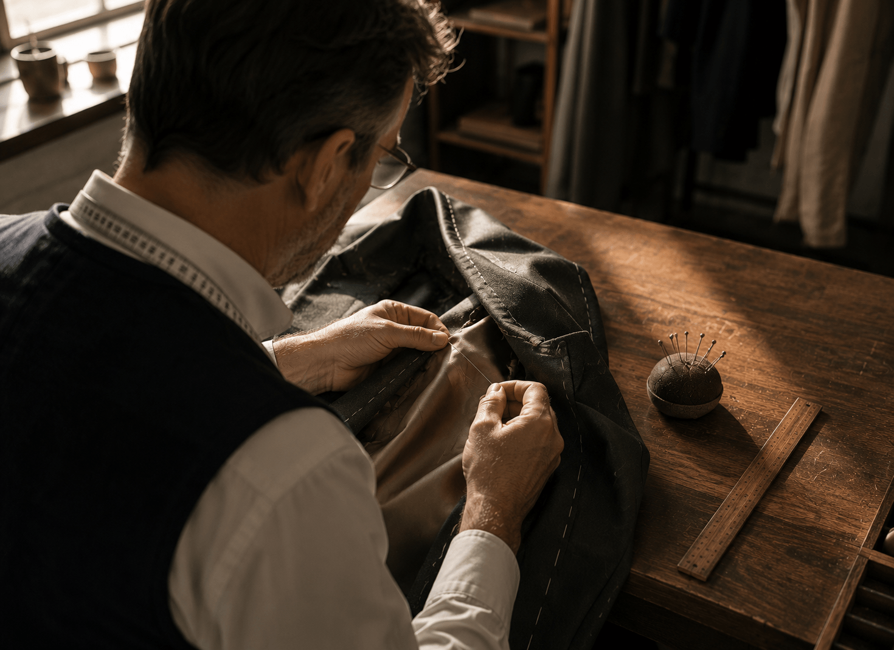
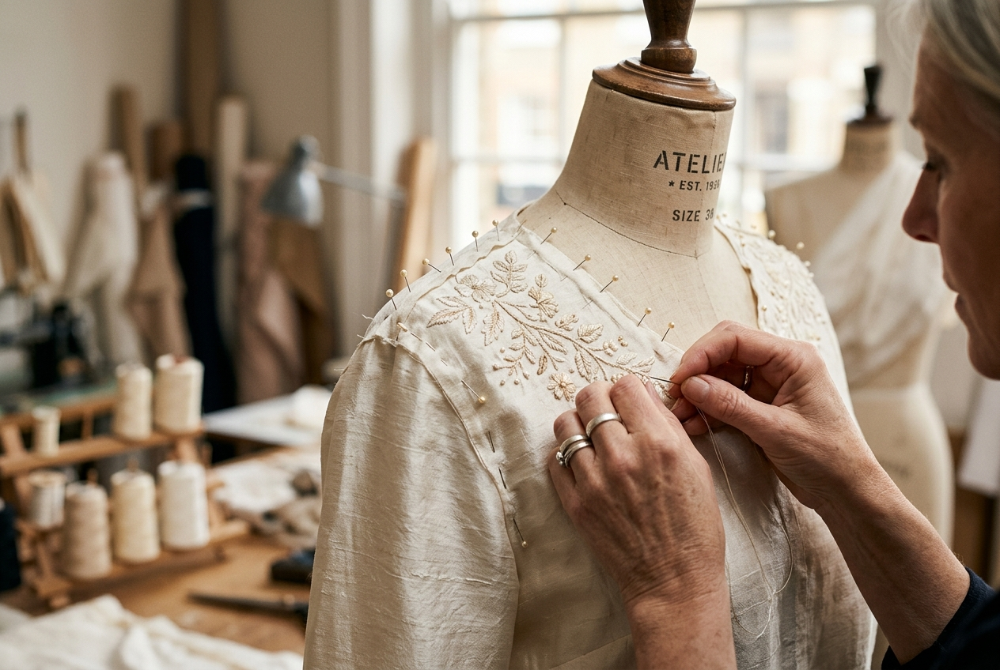
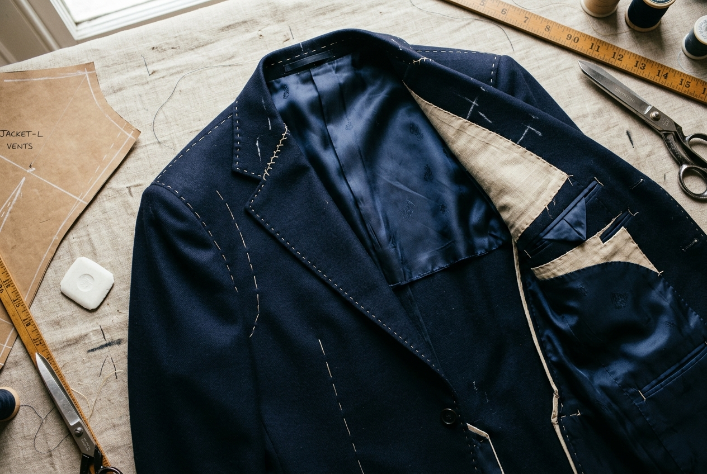
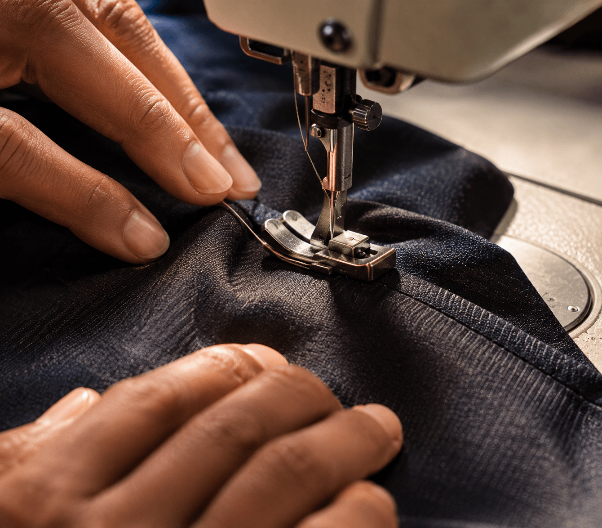

Established Atelier
Where Every Stitch
Tells a Story
Bespoke tailoring and custom stitching crafted with precision and care. Made-to-measure garments for women and men — stitched to your exact measurements.
Bespoke Tailoring,
Precisely Yours
At Thread & Form Atelier, every garment begins with a conversation. We take time to understand your style, your occasion, and your body — then craft something that fits you and only you.
From a finely stitched silk blouse to a tailored suit, our studio brings together traditional craftsmanship and contemporary design sensibility. No two garments are alike. No two clients are the same.
Our Story

Precision Measurement
Every garment is measured twice and fitted to perfection.
Expert Cutting
Fabric cut by skilled hands following bespoke patterns.
Quality Finishing
Every seam, hem and button hand-finished to perfection.
Fitting Revisions
We adjust until your garment fits like it was born to.

Custom Stitching
for Every Woman
From silk blouses to statement gowns, our women's tailoring service is built around your silhouette. We work with every fabric and every style — from traditional Indian wear to contemporary occasion dresses.
- Blouses & Kurtas
- Anarkali & Salwar Suits
- Lehenga & Cholis
- Dresses & Gowns
- Skirts & Trousers
- Occasion & Bridal Wear
Bespoke Men's
Tailoring & Suiting
A great suit is more than clothing — it is confidence and character in fabric. Our men's tailoring service covers everything from classic formal suits to elegant traditional kurtas, crafted with the attention your wardrobe deserves.
- Suits & Blazers
- Trousers & Shirts
- Sherwanis & Kurtas
- Formalwear
- Wedding Attire
- Casual Stitching

Perfect Fit for
Every Garment
Bring us your garments — new or old. Our alteration service ensures every piece of clothing fits exactly as it should, whether it needs a minor adjustment or a complete transformation.
Hemming, button replacement, seam repairs and everyday adjustments for a precise finish.
Custom stitching of standard garments from your provided fabric and measurements.
Bespoke suits, gowns, and structured formalwear completed with full fitting sessions.
Complex occasion wear timelines confirmed after your initial consultation and garment review.
How Your Garment
Comes to Life
From your first consultation to the final fitting, every step is handled with care, transparency and communication.
Consultation
We discuss your garment goals, personal style, occasion needs and preferred fabric choices.
Measurements
We record exact body measurements to draft a custom pattern shaped for your individual fit.

Construction
We cut and hand-finish your garment, balancing machine precision with skilled craftsmanship.
Final Fitting
We complete a final fitting to perfect the garment’s drape, comfort, shape and overall fit.
Premium Fabrics
for Every Occasion
Every garment begins with the right fabric. We maintain a curated selection of fine textiles — from breathable summer linens to rich suiting wools — to suit every climate, occasion and personal style.
Ready for Your
Perfect Garment?
Schedule a consultation with our master tailors. We'll guide you through fabric selection, measurements, and design — every step of the way.